by coopers.digitalDescubra se te acham, se confiam em você, e se isso é sustentável. Resultado na hora, sem cadastro.
São 8 perguntas curtas sobre como o seu negócio aparece hoje. Nenhuma resposta certa ou errada.
{{ perguntaDica }}
Serve só para deixar a leitura do resultado mais precisa.